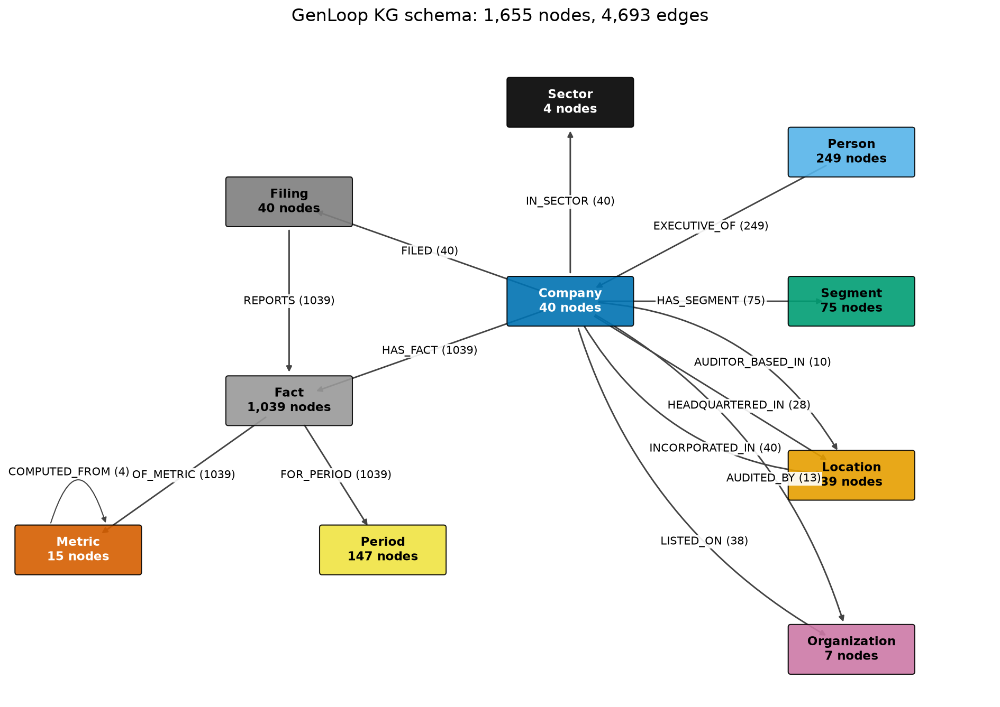

Latest 10-K for 40 companies in 4 sectors, answered by graph traversal with document and page citations. 29-question benchmark. Numbers from results/metrics.json. Gold is AI-drafted and AI-reviewed, not human verified (verified: false).
89.7%accuracy over all 29 (26/29); 92.9% of 28 scored
1.00 / 1.00precision / recall
8/15held-out accuracy (baseline 9/15)
962 / 962PDF facts matching XBRL
96%citations on a valid page
1,684 / 4,793graph nodes / edges
10-K HTML (EDGAR)
→
PDF (Chrome)
→
Parse tables (pdfplumber)
→
Extract facts PDF values only
→
XBRL check validate, never answer
→
Knowledge graph NetworkX
→
Planner + traversal
→
Answer + doc + page
Facts are read from the PDFs only. XBRL is an independent check applied before a fact is admitted. It never supplies an answer value.
Results
Slice
n
Correct
Acc. /n
Acc. /scored
Prec.
Rec.
Abstain
overall
29
26/29
89.7%
92.9%
1.000
1.000
4 (3/3)
single fact
10
10/10
100.0%
100.0%
1.000
1.000
2 (2/2)
multi hop
10
7/10
70.0%
77.8%
1.000
1.000
2 (1/1)
cross filing
9
9/9
100.0%
100.0%
1.000
1.000
0 (0/0)
held-out (15)
15
8/15
53.3%
53.3%
0.800
0.833
2 (1/2)
Q15 has no checkable gold: accuracy over all 29 is the task-defined number (26/29), over the 28 scored 26/28. Held-out row: 15 questions written before the planner/parser fixes; baseline 9/15, after fixes 8/15 (no improvement; main-benchmark gains partly came from inspecting its failures). Abstain = abstentions (correct / expected); all 3 deliberately unanswerable questions were refused. Doc hit 1.00; strict page hit 0.958 (cited page is a gold or acceptable page). With n=29 one question moves accuracy about 3.5 points; no confidence intervals.
Methodology
PDF-only parsing. EDGAR 10-K HTML is printed to PDF with headless Chrome and parsed with pdfplumber (tables, parentheses negatives, scale from the table header, multi-page tables, correct year column). Each fact stores doc, page and snippet; ID format TICKER|Metric|FY.
XBRL as a validation gate only. XBRL (the SEC's machine-readable copy of the filing numbers) was not in the task brief; it was added as a check on our parsing. 962/962 compared facts match; 67 have no XBRL counterpart; 0 rejected; 1,029 statement facts admitted.
Grounded LLM entity extraction. Officers, auditor, HQ, segments, employees come from cited pages; an entity is admitted only if its name appears literally on the cited page (488 of 504). Providers were mixed (Groq then Gemini after a daily quota hit).
Query. A rule-based planner builds a plan over the graph (company, metric, period, compare/rank/sum/growth); an LLM planner runs only if rules fail. No supporting fact means abstain with a reason.
Benchmark. 10 single-fact, 10 multi-hop, 9 cross-filing (3 unanswerable by design). Gold was written from PDF page text, not from the graph. Gold is AI-drafted and AI-reviewed (blind re-derivation by a second model), not human verified. A 15-question held-out set was written before the fixes.
Graph schema

Fact-centric schema: each Fact node holds value, unit, period, doc, page, snippet and validated flag. Interactive explorer of all 1,684 nodes: docs/kg/explorer.html.
Where it fails
Current failures: main 3 incorrect of 29 (one unscored); held-out 7 of 15 incorrect.
Main (26/29): Q13 largest Apple geographic segment: segment values are not in the graph, so it lists all segments (wrong value). Q14 Amazon auditor is missing from the graph, so it abstains wrongly. Q15 is unscored.
Held-out (8/15; baseline 9/15): difference, share-of-total and growth intents are not planned (H06 Amazon OCF minus capex, H07 BMY R&D share, H08, H10 UNH growth read as a sum); "generated more" read as growth (H13, a regression); Amex operating cash flow missing (H11); unknown company Netflix not refused (H15).
Strict page hit is 95.8% after the gold review added acceptable pages (D-081). The held-out set did not improve, so the main-benchmark gain is partly overfit to inspected failures.
Fact coverage: what the graph holds
394 of 480 company-metric cells are filled (green = matches XBRL, amber = no XBRL tag to check). Grey cells are mostly metrics a company does not report (gross profit for banks, R&D for retailers). Remaining parser miss: Amex operating cash flow (earlier misses for Merck/Abbott, Citi/Visa/Pfizer EPS and NVIDIA CapEx were fixed in D-084).
Other gaps
Entities are thin. Auditor found for 13 of 40 (extraction window ends before the signature page), HQ for 28 (PDF text like "Atlanta,Georgia" fails the literal grounding check), no executives for 10 companies. Segments hold names only, not values.
Scope. One 10-K per company: three income-statement years, no quarters, no restatements. Fiscal-year label is the year the period ends, so Home Depot "fiscal 2025" is stored as FY2026.
Evaluation honesty. The scorer was amended after the first run (D-080: 19/28 became 20/28). Question selection was informed by the extractor's known gap list (D-072), so abstain results are likely optimistic. Held-out: 9/15 baseline, 8/15 after fixes; both reported, n is small.
Concrete improvements
Planner: add difference, share-of-total and growth intents; stop reading "generated more" as growth; refuse questions naming a company outside the corpus. Query/graph: store segment values so "largest segment" can rank; extract the Amazon auditor and Amex operating cash flow. Re-check on a fresh held-out set written before the fixes (the current one has now been inspected).
Entities: use the signature page for the auditor, normalise comma spacing before grounding, add per-entity provider logging, parse the segment note into segment facts.
Grow the benchmark beyond 29, write questions before inspecting system output, and have a human verify the gold (it is AI-drafted and AI-reviewed only).